This German chocolate cake recipe has been in my family for a very long time. My great-grandma knew this recipe by heart! My father was born on her birthday so she made this cake for him every year.
Prep Time: 30 mins
Cook Time: 50 mins
Additional Time: 1 hr
Total Time: 2 hrs 20 mins
Servings: 10
Yield: 1 (8-inch) 3-layer cake
Gather all ingredients. Preheat the oven to 350 degrees F (175 degrees C). Grease and flour three 8-inch cake pans and line bottoms with parchment paper.
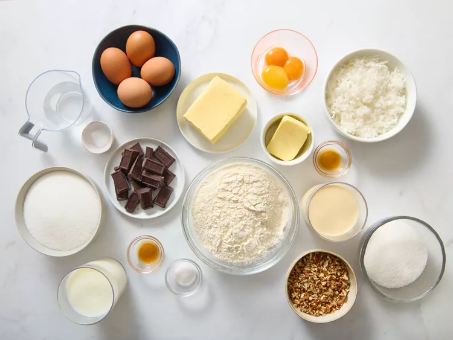
To make the chocolate cake: Stir chocolate into boiling water until melted; set aside to cool.
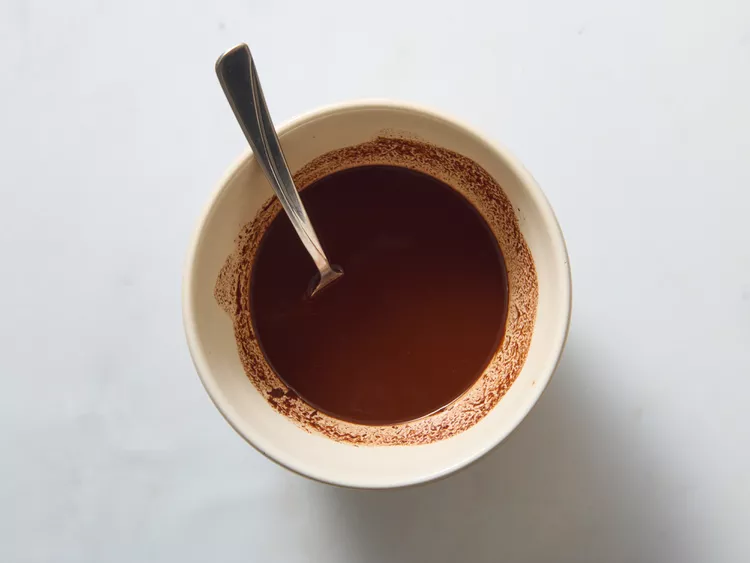
Beat 1 cup of softened butter with 2 cups of sugar in a large bowl with an electric mixer until lighter in color and fluffy. Stir in 4 egg yolks, one at a time, beating well after each addition.
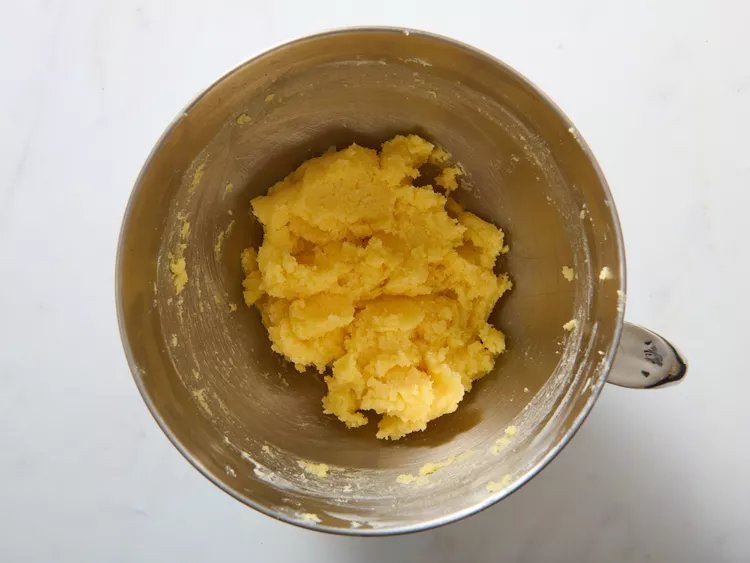
Beat in 1 teaspoon of vanilla extract and cooled chocolate mixture until thoroughly blended.
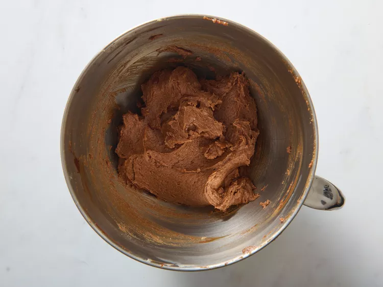
Sift flour, baking soda, and salt into a bowl; mix into chocolate cake batter, alternating with buttermilk, in 3 or 4 additions. Beat until batter is smooth, about 1 minute.
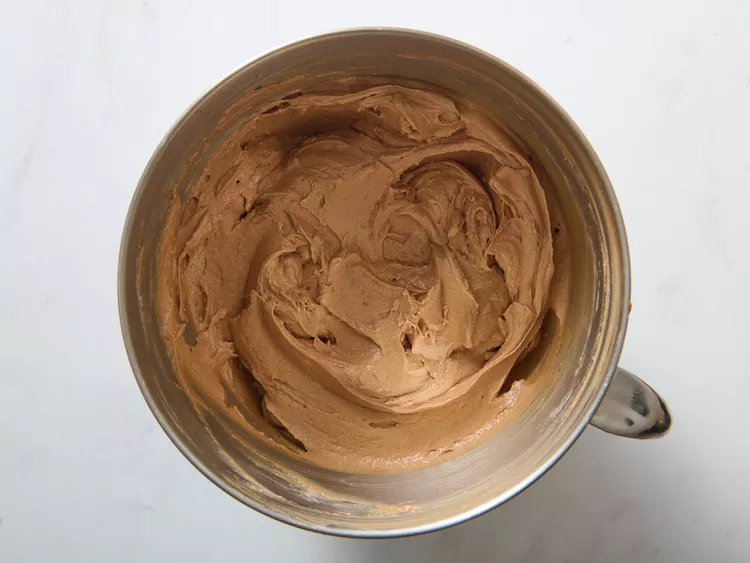
Beat egg whites in a metal or glass bowl until stiff peaks form when the beaters are lifted straight up; gently fold into chocolate cake batter, keeping as much volume as possible.
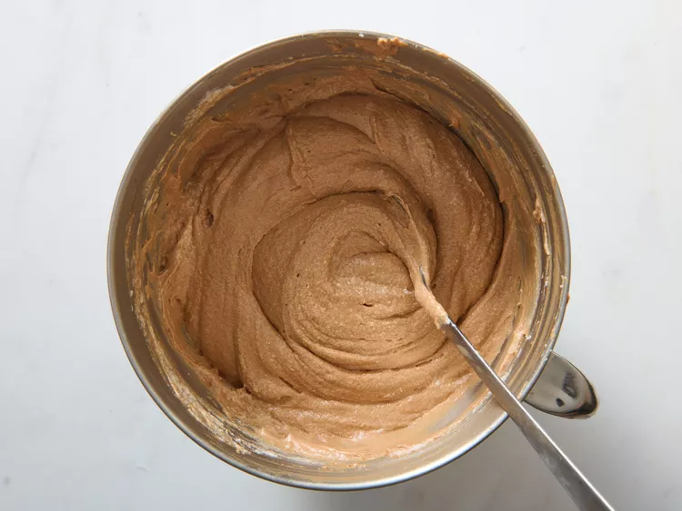
Pour batter into prepared cake pans.
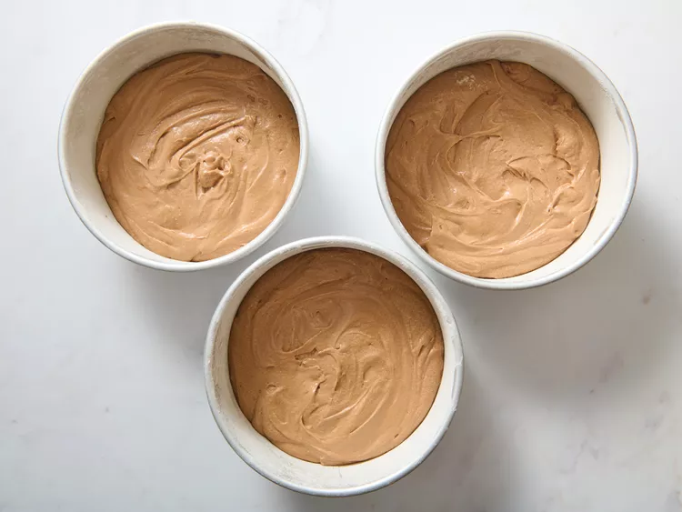
Bake in the preheated oven until the cakes have browned lightly and a toothpick inserted into the center of a cake comes out clean, 35 to 40 minutes. Cool cakes in pans for 10 minutes before turning out onto wire racks to cool completely.
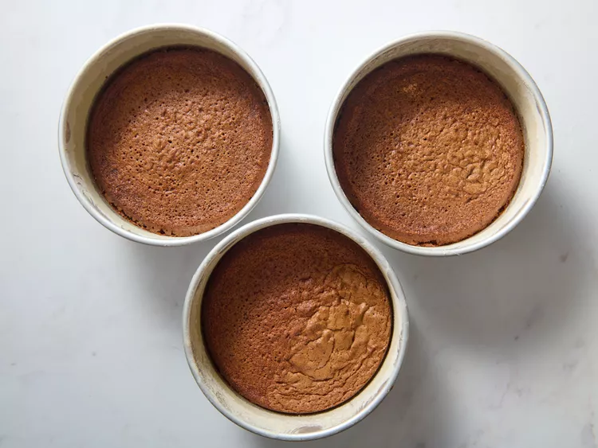
To make the pecan coconut frosting: Pour evaporated milk into a large saucepan. Mix in 1 cup of sugar, 3 egg yolks, 1/4 cup of butter, and 1 teaspoon of vanilla extract. Bring to a boil, reduce heat to medium, and cook until thickened, stirring constantly, about 12 minutes.
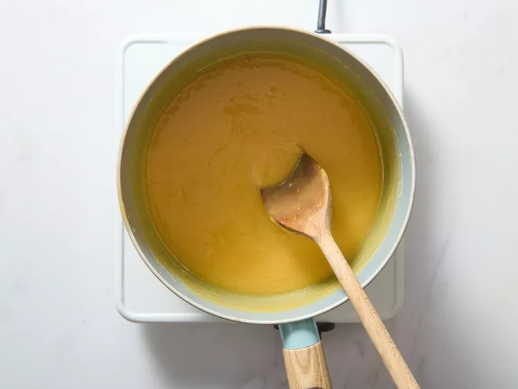
Remove from heat, and mix in coconut and pecans, beating until frosting has cooled and is spreadable.
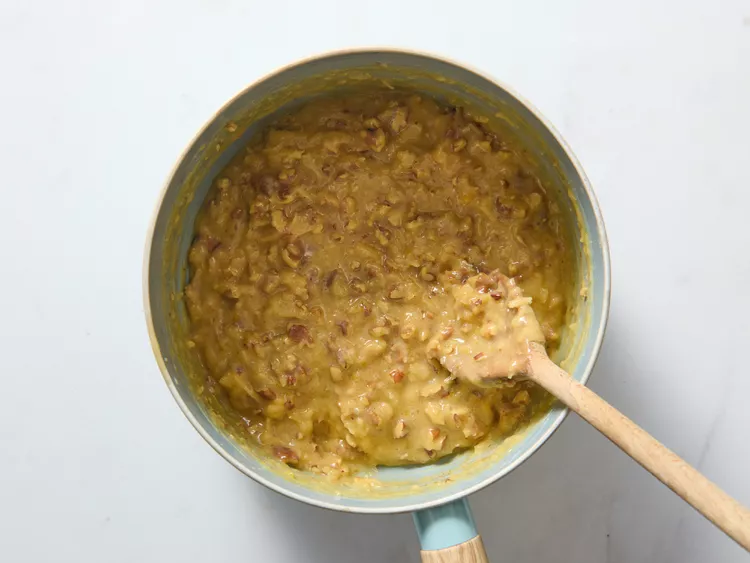
Spread frosting between each layer and on top of the cake. Enjoy!
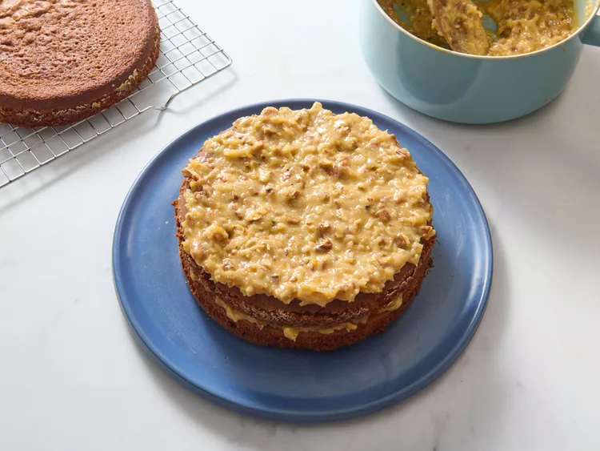
If you want to frost the sides of the cake, you will need to make additional frosting.
Instead of three round 8-inch cake layers, you can make two 9-inch square cakes and bake them for 40 to 45 minutes.
For deeper flavor, toast the pecans before adding them to the frosting. Spread pecans in a single layer on a baking sheet and bake at 350 degrees F (175 degrees C) until fragrant and lightly browned, 5 to 7 minutes. Cool completely before stirring into the frosting.